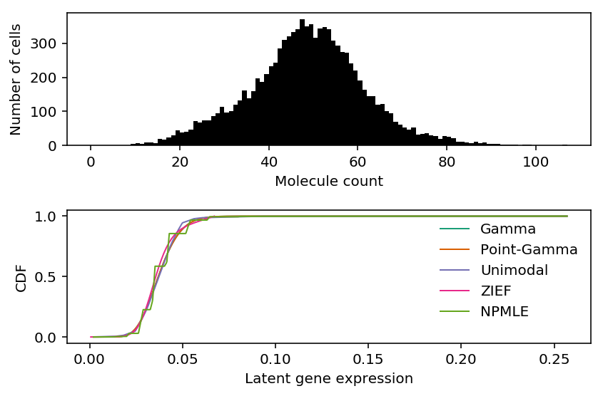
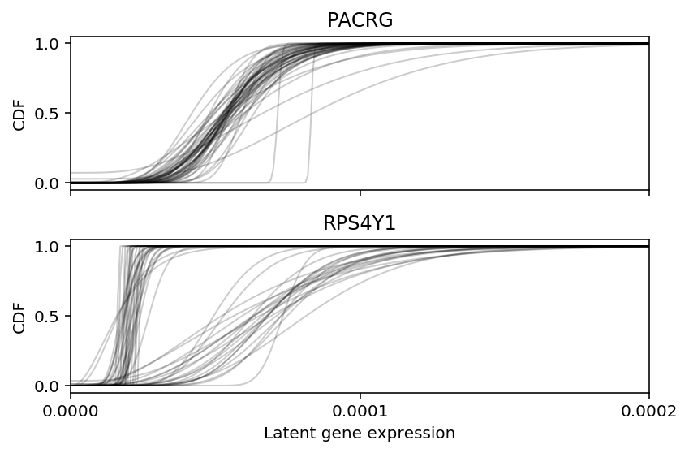
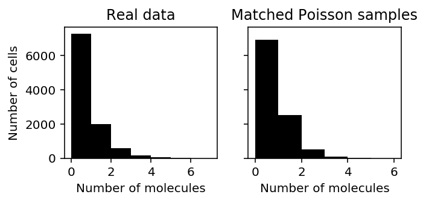

Comparison of expression deconvolution approaches
Table of Contents
Introduction
Suppose we have observations \(x_i \sim f(\theta_i), i = 1, \ldots, n\), and \(\theta_i \sim g(\cdot)\). Distribution deconvolution is the problem of estimating \(g \in \mathcal{G}\) from \(x_1, \ldots, x_n\), assuming \(f\) is known (Efron 2016).
Recent work suggests that scRNA-seq data follows this generative model (Wang et al. 2018). Here, we investigate the trade-off between model complexity/flexibility and generalization for different choices of \(\mathcal{G}\) in real data.
Setup
import functools as ft import gc import gzip import multiprocessing as mp import numpy as np import pandas as pd import scipy.io import scipy.stats as st import scipy.special as sp import sklearn.model_selection as skms import rpy2.robjects.packages import rpy2.robjects.pandas2ri import rpy2.robjects.numpy2ri rpy2.robjects.pandas2ri.activate() rpy2.robjects.numpy2ri.activate() ashr = rpy2.robjects.packages.importr('ashr') descend = rpy2.robjects.packages.importr('descend')
%matplotlib inline %config InlineBackend.figure_formats = set(['retina'])
import colorcet import matplotlib.pyplot as plt plt.rcParams['figure.facecolor'] = 'w'
Methods
Distribution deconvolution
The general form of distribution deconvolution for scRNA-seq is:
\[ x_{ij} \sim \mathrm{Poisson}(\exp(\mathbf{z}_i' \mathbf{b}_j) \lambda_{ij}) \]
\[ \lambda_{ij} \sim g_j(\cdot) \]
where:
- \(x_{ij}\) is the count of molecules of gene \(j\) in cell \(i\)
- \(\mathbf{z}_i\) is a \(q\)-vector of covariates for cell \(i\)
- \(\mathbf{b}_j\) is a \(q\)-vector of confounding effects on gene \(j\)
- \(\lambda_{ij}\) is proportional to the relative abundance of gene \(j\) in cell \(i\)
The primary inference goal is to recover \(g_j\). A secondary goal could be to recover \(\lambda_{ij}\). We can trade off flexibility and complexity of \(g_j\) for ease of implementation and speed.
- Point mass: \(g_j = \delta_\mu\). We mention it for completeness.
- Gamma: \(g_j = \mathrm{Gamma}(\cdot)\). This leads to the negative binomial marginal likelihood, and can be motivated by the empirical observation that the counts are overdispersed.
- Point-Gamma: \(g_j = \pi_j \delta_0(\cdot) + (1 - \pi_j) \mathrm{Gamma}(\cdot)\). This leads to the zero-inflated negative binomial marginal likelihood, which is still analytic and therefore computationally favorable. The inclusion of the point mass can be motivated by theory suggesting a biological mechanism for bimodal gene expression (Munsky et al. 2013, Kim and Marioni 2013).
- Unimodal: \(g_j\) is some unimodal distribution over non-negative reals. In practice, we represent this family of distribution as \(g_j = \sum_k \pi_k \mathrm{Uniform}(\cdot; \lambda_0, a_{jk})\), where \(k = 1, \ldots, K\) are sufficiently many and \(\lambda_0\) is the mode (Stephens 2016).
- Zero-inflated exponential family: \(g_j = \exp(\mathbf{Q}\alpha -
\phi(\alpha))\), where \(\mathbf{Q}\) is a
B spline spline basis matrix
for a natural cubic
spline
(
nsfunction; Efron 2016). The key idea of the method is use spline regression to find the sufficient statistic and natural parameters which maximizes the penalized likelihood of the observed data. The method has been extended to include a point mass on zero (Wang et al. 2018). - Nonparametric: \(g_j\) is some distribution over non-negative reals. In
practice, we discretize the representation
(Kiefer and Wolfowitz
1956,
Koenker
and Mizera 2014). In full detail, we use the representation \(g_j =
\sum_k \pi_k \mathrm{Uniform}(\cdot; ak, a(k + 1))\), where \(a\) is a
fixed step size, which allows us to re-use the
ashimplementation.
In order to evaluate methods on their ability to estimate \(g_j\), we hold out a validation set, and compute the validation set log likelihood. Based on our preliminary experiments, we compare all methods against Gamma.
def nb_llik(x, mean, inv_disp): return (x * np.log(mean / inv_disp) - x * np.log(1 + mean / inv_disp) - inv_disp * np.log(1 + mean / inv_disp) + sp.gammaln(x + inv_disp) - sp.gammaln(inv_disp) - sp.gammaln(x + 1)) def score_nb(x_train, x_test, **kwargs): import scqtl onehot = np.ones((x_train.shape[0], 1)) size_factor = x_train.sum(axis=1).reshape(-1, 1) design = np.zeros((x_train.shape[0], 1)) log_mu, log_phi, *_ = scqtl.tf.fit( umi=x_train.astype(np.float32), onehot=onehot.astype(np.float32), design=design.astype(np.float32), size_factor=size_factor.astype(np.float32), learning_rate=1e-3, max_epochs=30000) return nb_llik(x_test, x_test.sum(axis=1, keepdims=True) * np.exp(log_mu), np.exp(-log_phi)).sum(axis=0) def softplus(x): return np.where(x > 30, x, np.log(1 + np.exp(x))) def zinb_llik(x, mean, inv_disp, logodds): case_zero = -softplus(-logodds) + softplus(nb_llik(x, mean, inv_disp) - logodds) case_non_zero = -softplus(logodds) + nb_llik(x, mean, inv_disp) return np.where(x < 1, case_zero, case_non_zero) def score_zinb(x_train, x_test, **kwargs): import scqtl onehot = np.ones((x_train.shape[0], 1)) size_factor = x_train.sum(axis=1).reshape(-1, 1) init = scqtl.tf.fit( umi=x_train.astype(np.float32), onehot=onehot.astype(np.float32), size_factor=size_factor.astype(np.float32), learning_rate=1e-3, max_epochs=30000) log_mu, log_phi, logodds, *_ = scqtl.tf.fit( umi=x_train.astype(np.float32), onehot=onehot.astype(np.float32), size_factor=size_factor.astype(np.float32), learning_rate=1e-3, max_epochs=30000, warm_start=init[:3]) return zinb_llik(x_test, x_test.sum(axis=1, keepdims=True) * np.exp(log_mu), np.exp(-log_phi), logodds).sum(axis=0) def _score_unimix(train, test, train_size_factor, test_size_factor): lam = train / train_size_factor try: res0 = ashr.ash_workhorse( # these are ignored by ash pd.Series(np.zeros(train.shape)), 1, outputlevel='fitted_g', # numpy2ri doesn't DTRT, so we need to use pandas lik=ashr.lik_pois(y=pd.Series(train), scale=train_size_factor, link='identity'), mode=pd.Series([lam.min(), lam.max()])) res = ashr.ash_workhorse( pd.Series(np.zeros(test.shape)), 1, lik=ashr.lik_pois(y=pd.Series(test), scale=test_size_factor, link='identity'), fixg=True, g=res0.rx2('fitted_g')) ret = np.array(res.rx2('loglik')) except: ret = -np.inf return ret def score_unimix(x_train, x_test, pool, **kwargs): result = [] train_size_factor = pd.Series(x_train.sum(axis=1)) test_size_factor = pd.Series(x_test.sum(axis=1)) f = ft.partial(_score_unimix, train_size_factor=train_size_factor, test_size_factor=test_size_factor) # np iterates over rows result = pool.starmap(f, zip(x_train.T, x_test.T)) return np.array(result).ravel() def _score_descend(train, test, train_size_factor, test_size_factor): res = descend.deconvSingle(pd.Series(train), scaling_consts=train_size_factor, verbose=False) # DESCEND returns NA on errors if tuple(res.rclass) != ('DESCEND',): return -np.inf g = np.array(res.slots['distribution'])[:,:2] # Don't marginalize over lambda = 0 for x > 0, because p(x > 0 | lambda = # 0) = 0 case_nonzero = (st.poisson(mu=test_size_factor * g[1:,0]) .logpmf(test.reshape(-1, 1)) .dot(g[1:,1])) case_zero = (st.poisson(mu=test_size_factor * g[:,0]) .logpmf(test.reshape(-1, 1)) .dot(g[:,1])) llik = np.where(test > 0, case_nonzero, case_zero).sum() return llik def score_descend(x_train, x_test, pool, **kwargs): result = [] # numpy2ri doesn't DTRT, so we need to use pandas train_size_factor = pd.Series(x_train.sum(axis=1)) test_size_factor = x_test.sum(axis=1).reshape(-1, 1) f = ft.partial(_score_descend, train_size_factor=train_size_factor, test_size_factor=test_size_factor) result = pool.starmap(f, zip(x_train.T, x_test.T)) return np.array(result).ravel() def _score_npmle(train, test, train_size_factor, test_size_factor, K): lam = train / train_size_factor grid = np.linspace(lam.min(), 2 * lam.max(), K + 1) try: res0 = ashr.ash_workhorse( # these are ignored by ash pd.Series(np.zeros(train.shape)), 1, outputlevel='fitted_g', # numpy2ri doesn't DTRT, so we need to use pandas lik=ashr.lik_pois(y=pd.Series(train), scale=train_size_factor, link='identity'), g=ashr.unimix(pd.Series(np.ones(K) / K), pd.Series(grid[:-1]), pd.Series(grid[1:]))) res = ashr.ash_workhorse( pd.Series(np.zeros(test.shape)), 1, lik=ashr.lik_pois(y=pd.Series(test), scale=test_size_factor, link='identity'), fixg=True, g=res0.rx2('fitted_g')) ret = res.rx2('loglik') except: ret = -np.inf return ret def score_npmle(x_train, x_test, pool, K=100, **kwargs): result = [] train_size_factor = pd.Series(x_train.sum(axis=1)) test_size_factor = pd.Series(x_test.sum(axis=1)) f = ft.partial(_score_npmle, train_size_factor=train_size_factor, test_size_factor=test_size_factor, K=K) result = pool.starmap(f, zip(x_train.T, x_test.T)) return np.array(result).ravel() def score_saturated(x_train, x_test, **kwargs): return st.poisson(mu=x_test).logpmf(x_test).sum(axis=0) def evaluate_generalization(x, pool, methods=None, **kwargs): result = {} train, val = skms.train_test_split(x, **kwargs) if methods is None: methods = ['nb', 'zinb', 'unimix', 'descend', 'npmle', 'saturated'] for m in methods: # Hack: get functions by name result[m] = globals()[f'score_{m}'](train, val, pool=pool) return pd.DataFrame.from_dict(result, orient='columns')
Results
Homogeneous cell populations
Examples
Use sorted cells from Zheng et al. 2017.
def read_10x(prefix, min_detect=0.25, return_df=False): counts = scipy.io.mmread(f'{prefix}/matrix.mtx.gz').tocsr() keep = ((counts > 0).mean(axis=1) >= min_detect).A.ravel() counts = counts[keep].T.A.astype(np.int) if return_df: genes = pd.read_csv(f'{prefix}/genes.tsv.gz', sep='\t', header=None) return pd.DataFrame(counts, columns=genes.loc[keep, 0]) else: return counts def cd8_cytotoxic_t_cells(**kwargs): return read_10x('/project2/mstephens/aksarkar/projects/singlecell-ideas/data/10xgenomics/cytotoxic_t/filtered_matrices_mex/hg19', **kwargs) def cd19_b_cells(**kwargs): return read_10x('/project2/mstephens/aksarkar/projects/singlecell-ideas/data/10xgenomics/b_cells/filtered_matrices_mex/hg19/', **kwargs)
Look at some examples.
x = cd8_cytotoxic_t_cells() xj = pd.Series(x[:,x.mean(axis=0).argmax()]) size_factor = pd.Series(x.sum(axis=1)) lam = xj / size_factor
Fit a point mass.
mu = xj.sum() / size_factor.sum()
Fit Poisson ash.
unimix_res = ashr.ash_workhorse( pd.Series(np.zeros(x.shape[0])), 1, lik=ashr.lik_pois(y=xj, scale=size_factor, link='identity'), outputlevel='fitted_g', mixsd=pd.Series(np.geomspace(lam.min(), lam.max(), 25)), # This is a hack mode=mu) unimix_cdf = ashr.cdf_ash(unimix_res, np.linspace(lam.min(), lam.max(), 1000))
Fit NPMLE.
K = 100 grid = np.linspace(lam.min(), lam.max(), K + 1) npmle_res = ashr.ash_workhorse( pd.Series(np.zeros(x.shape[0])), 1, lik=ashr.lik_pois(y=xj, scale=size_factor, link='identity'), g=ashr.unimix(pd.Series(np.ones(K) / K), pd.Series(grid[:-1]), pd.Series(grid[1:]))) npmle_cdf = ashr.cdf_ash(npmle_res, np.linspace(lam.min(), lam.max(), 1000))
Fit DESCEND.
descend_res = descend.deconvSingle(xj, scaling_consts=size_factor, verbose=False)
Fit NB/ZINB.
import numpy as np import pandas as pd import scipy.io import scqtl <<read-zheng>> x = cd8_cytotoxic_t_cells() size_factor = x.sum(axis=1).reshape(-1, 1) onehot = np.ones((x.shape[0], 1)) design = np.zeros((x.shape[0], 1)) init = scqtl.tf.fit( umi=x.astype(np.float32), onehot=onehot.astype(np.float32), design=design.astype(np.float32), size_factor=size_factor.astype(np.float32), learning_rate=1e-3, max_epochs=30000, verbose=True) pd.DataFrame(init[0]).to_csv('/project2/mstephens/aksarkar/projects/singlecell-modes/data/zheng-cd8-nb-log-mu.txt.gz', compression='gzip', sep='\t') pd.DataFrame(init[1]).to_csv('/project2/mstephens/aksarkar/projects/singlecell-modes/data/zheng-cd8-nb-log-phi.txt.gz', compression='gzip', sep='\t') log_mu, log_phi, logodds, nb_llik, zinb_llik = scqtl.tf.fit( umi=x.astype(np.float32), onehot=onehot.astype(np.float32), design=design.astype(np.float32), size_factor=size_factor.astype(np.float32), learning_rate=1e-3, max_epochs=30000, warm_start=init[:3], verbose=True) pd.DataFrame(log_mu).to_csv('/project2/mstephens/aksarkar/projects/singlecell-modes/data/zheng-cd8-zinb-log-mu.txt.gz', compression='gzip', sep='\t') pd.DataFrame(log_phi).to_csv('/project2/mstephens/aksarkar/projects/singlecell-modes/data/zheng-cd8-zinb-log-phi.txt.gz', compression='gzip', sep='\t') pd.DataFrame(logodds).to_csv('/project2/mstephens/aksarkar/projects/singlecell-modes/data/zheng-cd8-zinb-logodds.txt.gz', compression='gzip', sep='\t')
sbatch --partition=gpu2 --gres=gpu:1 --mem=16G --time=60:00 --job-name=fit-nb #!/bin/bash source activate scmodes python /project2/mstephens/aksarkar/projects/singlecell-modes/code/fit-nb.py
j = str(x.mean(axis=0).argmax()) nb_log_mu = pd.read_csv('/project2/mstephens/aksarkar/projects/singlecell-modes/data/zheng-cd8-nb-log-mu.txt.gz', sep='\t') nb_log_phi = pd.read_csv('/project2/mstephens/aksarkar/projects/singlecell-modes/data/zheng-cd8-nb-log-phi.txt.gz', sep='\t') # Gamma (Use MATLAB and MATHEMATICA (b=theta=scale, a=alpha=shape) definition) # https://github.com/scipy/scipy/blob/v1.2.1/scipy/stats/_continuous_distns.py#L2479 gamma_cdf = st.gamma(a=np.exp(-nb_log_phi[j]), scale=np.exp(nb_log_mu[j] + nb_log_phi[j])).cdf(np.linspace(lam.min(), lam.max(), 1000))
zinb_log_mu = pd.read_csv('/project2/mstephens/aksarkar/projects/singlecell-modes/data/zheng-cd8-zinb-log-mu.txt.gz', sep='\t') zinb_log_phi = pd.read_csv('/project2/mstephens/aksarkar/projects/singlecell-modes/data/zheng-cd8-zinb-log-phi.txt.gz', sep='\t') zinb_logodds = pd.read_csv('/project2/mstephens/aksarkar/projects/singlecell-modes/data/zheng-cd8-zinb-logodds.txt.gz', sep='\t') point_gamma_cdf = st.gamma(a=np.exp(-zinb_log_phi[j]), scale=np.exp(zinb_log_mu[j] + zinb_log_phi[j])).cdf(np.linspace(lam.min(), lam.max(), 1000)) point_gamma_cdf *= sp.expit(-zinb_logodds[j].values) point_gamma_cdf += sp.expit(zinb_logodds[j].values)
Plot the observed counts and deconvolved distributions.
cm = plt.get_cmap('Dark2').colors fig, ax = plt.subplots(2, 1) h = ax[0].hist(xj, bins=np.arange(xj.max() + 1), color='k') ax[0].set_xlabel('Molecule count') ax[0].set_ylabel('Number of cells') ax[1].plot(np.linspace(lam.min(), lam.max(), 1000), gamma_cdf, color=cm[0], lw=1, label='Gamma') ax[1].plot(np.linspace(lam.min(), lam.max(), 1000), point_gamma_cdf, color=cm[1], lw=1, label='Point-Gamma') ax[1].plot(np.array(unimix_cdf.rx2('x')), np.array(unimix_cdf.rx2('y')).ravel(), c=cm[2], lw=1, label='Unimodal') F = np.cumsum(np.array(descend_res.slots['density.points'])[:,1]) ax[1].plot(np.array(descend_res.slots['density.points'])[:,0], F / F.max(), c=cm[3], lw=1, label='ZIEF') ax[1].plot(np.array(npmle_cdf.rx2('x')), np.array(npmle_cdf.rx2('y')).ravel(), c=cm[4], lw=1, label='NPMLE') ax[1].set_xlabel('Latent gene expression') ax[1].set_ylabel('CDF') ax[1].legend(frameon=False) fig.tight_layout()

Print out the histogram for inspection.
np.vstack((h[1][:-1], h[0])).T
array([[ 0., 0.], [ 1., 1.], [ 2., 1.], [ 3., 0.], [ 4., 0.], [ 5., 0.], [ 6., 1.], [ 7., 0.], [ 8., 1.], [ 9., 5.], [ 10., 8.], [ 11., 4.], [ 12., 9.], [ 13., 9.], [ 14., 8.], [ 15., 20.], [ 16., 17.], [ 17., 24.], [ 18., 31.], [ 19., 44.], [ 20., 39.], [ 21., 41.], [ 22., 46.], [ 23., 72.], [ 24., 68.], [ 25., 74.], [ 26., 74.], [ 27., 86.], [ 28., 94.], [ 29., 114.], [ 30., 96.], [ 31., 102.], [ 32., 120.], [ 33., 132.], [ 34., 161.], [ 35., 138.], [ 36., 159.], [ 37., 197.], [ 38., 186.], [ 39., 210.], [ 40., 232.], [ 41., 244.], [ 42., 284.], [ 43., 309.], [ 44., 321.], [ 45., 332.], [ 46., 342.], [ 47., 371.], [ 48., 349.], [ 49., 356.], [ 50., 317.], [ 51., 343.], [ 52., 347.], [ 53., 342.], [ 54., 308.], [ 55., 294.], [ 56., 274.], [ 57., 272.], [ 58., 241.], [ 59., 219.], [ 60., 191.], [ 61., 164.], [ 62., 145.], [ 63., 144.], [ 64., 120.], [ 65., 121.], [ 66., 100.], [ 67., 95.], [ 68., 69.], [ 69., 62.], [ 70., 53.], [ 71., 47.], [ 72., 52.], [ 73., 32.], [ 74., 35.], [ 75., 36.], [ 76., 30.], [ 77., 28.], [ 78., 20.], [ 79., 27.], [ 80., 26.], [ 81., 21.], [ 82., 12.], [ 83., 12.], [ 84., 9.], [ 85., 7.], [ 86., 12.], [ 87., 8.], [ 88., 9.], [ 89., 6.], [ 90., 4.], [ 91., 5.], [ 92., 2.], [ 93., 2.], [ 94., 2.], [ 95., 3.], [ 96., 1.], [ 97., 2.], [ 98., 2.], [ 99., 0.], [100., 0.], [101., 0.], [102., 1.], [103., 1.], [104., 0.], [105., 0.], [106., 2.]])
Speed up ash mode estimation
To estimate the mode \(\lambda_{0j}\) for gene \(j\), we find:
\[ \lambda_{0j}^* = \arg\max_{\lambda_{0j}} \sum_i \int f(x_i \mid \lambda_i) g_j(\lambda_i \mid \pi, \lambda_{0j})\ d\lambda_i \]
using golden section search. Investigate two issues:
First, Mengyin Liu claimed this problem is convex in \(\lambda_{0j}\), However, on the above example, the quality of the result depends on the bounds of the search. Is this problem actually convex?
By default, the bounds are \([\min(x_i), \max(x_i)]\), which can be extremely large. However, we need to remove the scaling factor, so should we instead search over \([\min(x_i / R_i), \max(x_i / R_i)]\)? The motivation for the proposed alternative is to only look over plausible values of \(\lambda_i\).
grid = np.geomspace(1e-3, xj.max(), 100) llik = np.array([np.array( ashr.ash( pd.Series(np.zeros(xj.shape)), 1, lik=ashr.lik_pois(y=xj, scale=size_factor, link='identity'), mode=lam0, outputlevel='loglik').rx2('loglik')) for lam0 in grid]).ravel()
res0 = ashr.ash( pd.Series(np.zeros(xj.shape)), 1, lik=ashr.lik_pois(y=xj, scale=size_factor, link='identity'), mode='estimate') res1 = ashr.ash( pd.Series(np.zeros(x.shape[0])), 1, lik=ashr.lik_pois(y=xj, scale=size_factor, link='identity'), mode=pd.Series([lam.min(), lam.max()]))
plt.clf() plt.gcf().set_size_inches(3, 3) plt.xscale('log') plt.plot(grid, np.array(llik).ravel(), lw=1, c='k') plt.axvline(x=np.array(res0.rx2('fitted_g').rx2('a'))[0], c='k', lw=1, ls=':', label='Default') plt.axvline(x=np.array(res1.rx2('fitted_g').rx2('a'))[0], c='r', lw=1, ls=':', label='Restricted') plt.legend(frameon=False, loc='center left', bbox_to_anchor=(1, .5)) plt.xlabel('Mode $\lambda_0$') _ = plt.ylabel('Marginal likelihood')
It appears the problem is actually non-convex. Surprisingly, it appears non-convex even for a case where the data are not bimodal. For bimodal data, we might expect that choice of the mode would change the weight on/near zero and result in a non-convex objective.
According to the documentation, the search can fail for poor choice of initial query, which depends entirely on the initial interval. In this example, the initial interval does not contain the mode, and therefore the search finds the correct local optimum within the interval, but fails to find the global optimum.
This result does not necessarily mean that our proposed alternative, to search over \([\min(x_i / R_i), \max(x_i / R_i)]\) will work, because Poisson noise could mean the true \(\lambda_i > x_i / R_i\) for some sample \(i\).
Should we search further to be reasonably certain we haven't missed the mode? Intuitively, the largest \(\hat\lambda_i\) value we do observe should be "overestimated"; if it were not, then we should expect higher density of \(g\) around it, and values larger than it in the observed data.
Second, we have to solve an ash subproblem for each query
\(\lambda_0\), which becomes extremely expensive for large data sets. We
can speed up the procedure by downsampling the data for mode
estimation. How much worse is the fitted model?
def score_mode_estimation(data, seed=0, p=0.1): temp = data.sample(random_state=seed, frac=p) res0 = ashr.ash( pd.Series(np.zeros(temp.shape[0])), 1, lik=ashr.lik_pois(y=temp['x'], scale=temp['scale'], link='identity'), mode=pd.Series([temp['lam'].min(), temp['lam'].max()])) lam0 = np.array(res0.rx2('fitted_g').rx2('a'))[0] res = ashr.ash( pd.Series(np.zeros(data.shape[0])), 1, lik=ashr.lik_pois(y=data['x'], scale=data['scale'], link='identity'), mode=lam0) return lam0, np.array(res.rx2('loglik'))[0] def evaluate_mode_estimation(data, num_trials): result = [] for p in (0.1, 0.25, 0.5): for trial in range(num_trials): lam0, llik = score_mode_estimation(data, seed=trial, p=p) result.append([p, trial, lam0, llik]) result = pd.DataFrame(result, columns=['p', 'trial', 'lam0', 'llik']) return result
mode_estimation_result = evaluate_mode_estimation(pd.DataFrame({'x': xj, 'scale': size_factor, 'lam': lam}), num_trials=10)
plt.clf() plt.gcf().set_size_inches(3, 3) plt.scatter(mode_estimation_result['p'], mode_estimation_result['llik'], s=4, c='k') plt.axhline(y=np.array(res1.rx2('loglik'))[0], c='k', lw=1, ls=':') plt.xlabel('Fraction of original data') plt.ylabel('Training log likelihood')
Text(0, 0.5, 'Training log likelihood')
Downsampling is likely to result in a much worse model fit, so we should not pursue that strategy to speed up the model estimation.
Run the benchmark
Use iPSCs derived from Yoruba LCLs (Sarkar et al. 2018). The data were sequenced on the Fluidigm C1 platform to much greater depth, allowing many more genes to be detected (especially lower expressed genes), potentially including genes with bimodal steady state gene expression. Because many more genes are detected, we need to randomly subsample genes for CPU-based methods to complete in a reasonable budget.
def ipsc(prefix='/project2/mstephens/aksarkar/projects/singlecell-qtl/data', return_df=False, query=None, n=None, seed=0): annotations = pd.read_csv(f'{prefix}/scqtl-annotation.txt', sep='\t') keep_samples = pd.read_csv(f'{prefix}/quality-single-cells.txt', sep='\t', index_col=0, header=None) keep_genes = pd.read_csv(f'{prefix}/genes-pass-filter.txt', sep='\t', index_col=0, header=None) if query is not None: keep_genes = keep_genes[keep_genes.index.isin(query)] if n is not None: keep_genes = keep_genes.sample(n=n, random_state=seed) annotations = annotations.loc[keep_samples.values.ravel()] result = [] for chunk in pd.read_csv(f'{prefix}/scqtl-counts.txt.gz', sep='\t', index_col=0, chunksize=100): x = (chunk .loc[:,keep_samples.values.ravel()] .filter(items=keep_genes[keep_genes.values.ravel()].index, axis='index')) if not x.empty: result.append(x) result = pd.concat(result) # Return samples x genes if return_df: return result.T else: return result.values.T
Run the benchmark.
import os cpu_methods = ['unimix', 'descend', 'npmle', 'saturated'] task = int(os.environ['SLURM_ARRAY_TASK_ID']) with mp.Pool(maxtasksperchild=10) as pool: x = ipsc(n=100, return_df=True) res = evaluate_generalization(x.values, pool=pool, test_size=0.1, random_state=0, methods=cpu_methods[task:task + 1]) res.index = x.columns res.to_csv(f'/project2/mstephens/aksarkar/projects/singlecell-modes/data/deconv-generalization/ipsc-{cpu_methods[task]}.txt.gz', compression='gzip', sep='\t')
sbatch --partition=broadwl --mem=32G -a 0-3 -n1 -c28 --exclusive --time=6:00:00 --job-name=benchmark --output=benchmark-cpu.out #!/bin/bash module load cuda/9.0 source activate scmodes python -i /project2/mstephens/aksarkar/projects/singlecell-modes/code/benchmark.py <<EOF <<run-homogeneous-benchmark-cpu>> EOF
x = ipsc(return_df=True) res = evaluate_generalization(x.values, pool=None, test_size=0.1, random_state=0, methods=['nb', 'zinb']) res.index = x.columns res.to_csv(f'/project2/mstephens/aksarkar/projects/singlecell-modes/data/deconv-generalization/ipsc-gpu.txt.gz', compression='gzip', sep='\t')
sbatch --partition=gpu2 --gres=gpu:1 --mem=16G --time=12:00:00 --job-name=benchmark --output=benchmark-gpu.out #!/bin/bash module load cuda/9.0 source activate scmodes python -i /project2/mstephens/aksarkar/projects/singlecell-modes/code/benchmark.py <<EOF <<run-homogeneous-benchmark-gpu>> EOF
Read the results.
benchmark = {} for data in ('cd8_cytotoxic_t_cells', 'cd19_b_cells'): benchmark[data] = pd.read_csv(f'/project2/mstephens/aksarkar/projects/singlecell-modes/data/deconv-generalization/{data}.txt.gz', sep='\t', index_col=0) benchmark['ipsc'] = ( pd.read_csv('/project2/mstephens/aksarkar/projects/singlecell-modes/data/deconv-generalization/ipsc-gpu.txt.gz', index_col=0, sep='\t') .merge(pd.read_csv('/project2/mstephens/aksarkar/projects/singlecell-modes/data/deconv-generalization/ipsc-unimix.txt.gz', index_col=0, sep='\t'), on='gene') .merge(pd.read_csv('/project2/mstephens/aksarkar/projects/singlecell-modes/data/deconv-generalization/ipsc-descend.txt.gz', sep='\t'), on='gene') .merge(pd.read_csv('/project2/mstephens/aksarkar/projects/singlecell-modes/data/deconv-generalization/ipsc-npmle.txt.gz', index_col=0, sep='\t'), on='gene') .merge(pd.read_csv('/project2/mstephens/aksarkar/projects/singlecell-modes/data/deconv-generalization/ipsc-saturated.txt.gz', index_col=0, sep='\t'), on='gene') .set_index('gene'))
Plot the generalization performance of each method.
fig, ax = plt.subplots(1, 3) fig.set_size_inches(7, 3) for i, k in enumerate(sorted(benchmark.keys())): ax[i].boxplot((benchmark[f'{k}'].values - benchmark[f'{k}']['nb'].values.reshape(-1, 1))[:,1:-1], widths=0.25, medianprops={'color': 'k'}, flierprops={'marker': '.', 'markersize': 4}) ax[i].set_xticklabels(['ZINB', 'Unimodal', 'ZIEF', 'NPMLE'], rotation=90) ax[i].set_xlabel('Assumed latent dist') ax[i].set_title(k) ax[0].set_ylabel('Diff val set log lik from NB') fig.tight_layout()

Zoom in on the relevant part of the plot.
fig, ax = plt.subplots(1, 3) fig.set_size_inches(7, 3) for i, k in enumerate(sorted(benchmark.keys())): T = (benchmark[f'{k}'].values - benchmark[f'{k}']['nb'].values.reshape(-1, 1))[:,1:-1] ax[i].boxplot(T, widths=0.25, medianprops={'color': 'k'}, flierprops={'marker': '.', 'markersize': 4}) ax[i].axhline(y=0, ls=':', lw=1, c='k') ax[i].set_xticklabels(['ZINB', 'Unimodal', 'ZIEF', 'NPMLE'], rotation=90) ax[i].set_xlabel('Assumed latent dist') ax[i].set_ylim(-20, 1.05 * T.max()) ax[i].set_title(k) ax[0].set_ylabel('Diff val set log lik from NB') fig.tight_layout()
The results suggest that NB (assuming Gamma-distributed latent gene expression) is adequate to accurately estimate \(g\) from the data.
Of note, ash is >10\(\times\) slower than descend, and descend is
faster on small data sets than GPU-based methods.
Investigate ZINB vs. NB in high-depth data
Try to find a case in the full iPSC data where ZINB is required, by performing likelihood ratio tests against NB. Use Bonferroni correction to control FWER.
ipsc_res = pd.read_csv('/project2/mstephens/aksarkar/projects/singlecell-modes/data/deconv-generalization/ipsc-gpu.txt.gz', index_col=0, sep='\t') lrt = st.chi2(1).sf(-2 * (ipsc_res['nb'] - ipsc_res['zinb'])) ipsc_res[lrt < .05 / lrt.shape[0]]
nb zinb gene ENSG00000112530 -2017.717750 -1987.894352 ENSG00000129824 -1803.651932 -1789.106410
ipsc_counts = ipsc(query=list(ipsc_res[lrt < .05 / lrt.shape[0]].index), return_df=True)
gene_info = pd.read_csv('/project2/mstephens/aksarkar/projects/singlecell-qtl/data/scqtl-genes.txt.gz', sep='\t', index_col=0)
plt.clf() fig, ax = plt.subplots(1, 2) fig.set_size_inches(6, 3) for a, k in zip(ax, ipsc_counts): h = a.hist(ipsc_counts[k], bins=np.arange(ipsc_counts[k].max() + 1), color='k') a.set_title(gene_info.loc[k, 'name']) a.set_xlabel('Number of molecules') a.set_ylabel('Number of cells') fig.tight_layout()
Print out the histogram for RPS4Y1 for inspection.
np.vstack((h[1][:-1], h[0])).T
array([[ 0., 803.], [ 1., 309.], [ 2., 435.], [ 3., 407.], [ 4., 383.], [ 5., 323.], [ 6., 323.], [ 7., 239.], [ 8., 163.], [ 9., 166.], [ 10., 132.], [ 11., 98.], [ 12., 97.], [ 13., 106.], [ 14., 95.], [ 15., 95.], [ 16., 94.], [ 17., 109.], [ 18., 92.], [ 19., 89.], [ 20., 87.], [ 21., 83.], [ 22., 100.], [ 23., 75.], [ 24., 71.], [ 25., 60.], [ 26., 61.], [ 27., 60.], [ 28., 60.], [ 29., 34.], [ 30., 50.], [ 31., 41.], [ 32., 34.], [ 33., 38.], [ 34., 28.], [ 35., 23.], [ 36., 19.], [ 37., 18.], [ 38., 11.], [ 39., 7.], [ 40., 17.], [ 41., 8.], [ 42., 12.], [ 43., 7.], [ 44., 4.], [ 45., 11.], [ 46., 4.], [ 47., 2.], [ 48., 1.], [ 49., 3.], [ 50., 1.], [ 51., 1.], [ 52., 2.], [ 53., 1.], [ 54., 1.], [ 55., 1.], [ 56., 2.], [ 57., 0.], [ 58., 0.], [ 59., 0.], [ 60., 0.], [ 61., 0.], [ 62., 0.], [ 63., 0.], [ 64., 0.], [ 65., 1.]])
PACRG (Parkin coregulated gene) shares a promoter with PKRG (PARK2; Parkin). PARKIN is involved in a signaling pathway for mitochondria damage, and mitochrondrial damage appears to be relevant to neurodegenerative disease etiology (Alzheimer's disease and Parkinson's disease). Mitochrondrial damage could explain the bimodal distribution of PACRG in the iPSC data: the reprogramming protocol could induce oxidative stress on some of the cells, resulting in damage.
RPS4Y1 (Ribosomal protein S4, Y-linked) is on the Y chromosome, and therefore we should expect it to only be expressed in males. The homologous gene on the X chromosome (RPS4X) has a different coding sequence. Naively, sex-linkage should explain why this gene exhibits bimodal gene expression.
curl -OL 'http://ftp.1000genomes.ebi.ac.uk/vol1/ftp/technical/working/20130606_sample_info/20130606_sample_info.txt'
donor_info = pd.read_csv('/project2/mstephens/aksarkar/projects/singlecell-modes/data/20130606_sample_info.txt', sep='\t')
Count how many cells come from females.
prefix = '/project2/mstephens/aksarkar/projects/singlecell-qtl/data/' annotations = pd.read_csv(f'{prefix}/scqtl-annotation.txt', sep='\t') keep_samples = pd.read_csv(f'{prefix}/quality-single-cells.txt', sep='\t', index_col=0, header=None) annotations = annotations.loc[keep_samples.values.ravel()]
annotations.merge(donor_info, left_on='chip_id', right_on='Sample')['Gender'].value_counts()
female 3109 male 2369 Name: Gender, dtype: int64
Look at the full benchmark results for NB vs. ZINB (only the GPU implementation is suitable for this).
plt.clf() plt.gcf().set_size_inches(3, 3) h = plt.hist(ipsc_res['zinb'] - ipsc_res['nb'], color='k', bins=np.arange(-10, 40, 2)) plt.xlabel('Diff val set log lik from NB') _ = plt.ylabel('Number of genes')

Print the histogram for inspection.
np.vstack((h[1][:-1], h[0])).T.astype(int)
array([[ -10, 0], [ -8, 0], [ -6, 0], [ -4, 0], [ -2, 4977], [ 0, 4973], [ 2, 2], [ 4, 3], [ 6, 0], [ 8, 0], [ 10, 0], [ 12, 0], [ 14, 1], [ 16, 0], [ 18, 0], [ 20, 0], [ 22, 0], [ 24, 0], [ 26, 0], [ 28, 1], [ 30, 0], [ 32, 0], [ 34, 0], [ 36, 0]])
Look at the fitted ZINB distribution per-individual for this gene.
ipsc_log_mu = pd.read_csv('/project2/mstephens/aksarkar/projects/singlecell-qtl/data/density-estimation/design1/zi2-log-mu.txt.gz', sep=' ', index_col=0) ipsc_log_phi = pd.read_csv('/project2/mstephens/aksarkar/projects/singlecell-qtl/data/density-estimation/design1/zi2-log-phi.txt.gz', sep=' ', index_col=0) ipsc_logodds = pd.read_csv('/project2/mstephens/aksarkar/projects/singlecell-qtl/data/density-estimation/design1/zi2-logodds.txt.gz', sep=' ', index_col=0)
def point_gamma_cdf(grid, log_mu, log_phi, logodds): res = st.gamma(a=np.exp(-log_phi), scale=np.exp(log_mu + log_phi)).cdf(grid) res *= sp.expit(-logodds) res += sp.expit(logodds) return res lam = ipsc_counts.values / annotations['mol_hs'].values.reshape(-1, 1) grid = np.linspace(lam.min(), lam.max(), 1000) cdfs = np.array([[point_gamma_cdf(grid, ipsc_log_mu.loc[j, k], ipsc_log_phi.loc[j, k], ipsc_logodds.loc[j, k]) for k in ipsc_log_mu] for j in ipsc_counts.columns if j != list(ipsc_log_mu.columns).index('NA18498')])
plt.clf() fig, ax = plt.subplots(2, 1, sharex=True) fig.set_size_inches(6, 4) for a, F, k in zip(ax, cdfs, ipsc_counts.columns): for f in F: a.set_xlim(0, 2e-4) a.set_xticks(np.linspace(0, 2e-4, 3)) a.plot(grid, f, c='k', lw=1, alpha=0.2) a.set_title(gene_info.loc[k, 'name']) a.set_ylabel('CDF') ax[-1].set_xlabel('Latent gene expression') fig.tight_layout()

Plot the estimated RPS4Y1 latent gene expression, stratified by donor sex.
colors = {k: 'r' if v == 'male' else 'b' for k, v in donor_info.set_index('Sample') .filter(items=list(ipsc_log_mu.columns), axis=0) ['Gender'] .iteritems()} plt.clf() plt.gcf().set_size_inches(3, 2) for f, k in zip(cdfs[1], ipsc_log_mu.columns): plt.xlim(0, 2e-4) plt.xticks(np.linspace(0, 2e-4, 3)) plt.plot(grid, f, lw=1, alpha=0.2, c=colors.get(k, 'k')) dummy = [plt.Line2D([0], [0], c='r'), plt.Line2D([0], [0], c='b')] plt.legend(dummy, ['Male', 'Female'], frameon=False) plt.title('RPS4Y1') plt.ylabel('CDF') plt.xlabel('Latent gene expression')

Investigate genes with support for more complex models
In B cells, several genes are better fit by DESCEND than other methods.
b_cells = read_10x('/project2/mstephens/aksarkar/projects/singlecell-ideas/data/10xgenomics/b_cells/filtered_matrices_mex/hg19/', return_df=True)
query = benchmark['cd19_b_cells'][benchmark['cd19_b_cells']['descend'] > benchmark['cd19_b_cells']['nb']].index plt.clf() fig, ax = plt.subplots(6, 6, sharey=True, sharex=True) fig.set_size_inches(9, 9) for a, k in zip(ax.ravel(), query): a.hist(b_cells.iloc[:,k], bins=np.arange(b_cells.iloc[:,k].max() + 1), color='k') a.text(x=.9, y=.9, s=f"$\Delta L$={benchmark['cd19_b_cells']['descend'].loc[k] - benchmark['cd19_b_cells']['nb'].loc[k]:.1f}", horizontalalignment='right', verticalalignment='top', transform=a.transAxes) a.set_title(gene_info.loc[b_cells.columns[k], 'name'] if b_cells.columns[k] in gene_info.index else b_cells.columns[k]) for y in range(ax.shape[0]): ax[y][0].set_ylabel('Number of cells') for x in range(ax.shape[1]): ax[-1][x].set_xlabel('Num mols') fig.tight_layout()

For comparison, consider the gene with the largest difference in validation set log likelihood. Deconvolve its gene expression assuming \(g_j = \delta_\mu(\cdot)\), using the fact:
\[ \textstyle\sum_i x_i \sim \mathrm{Poisson}\left(\textstyle\sum_i R_i \mu\right) \]
diff = benchmark['cd19_b_cells']['descend'] - benchmark['cd19_b_cells']['nb'] plt.clf() fig, ax = plt.subplots(1, 2, sharey=True) fig.set_size_inches(5, 2) np.random.seed(1) x = b_cells.iloc[:,diff.idxmax()] scale = b_cells.sum(axis=1) mu = x.sum() / scale.sum() y = np.random.poisson(lam=scale * mu) ax[0].hist(y, bins=np.arange(y.max() + 1), color='k') ax[0].set_title('Point mass') ax[1].hist(x, bins=np.arange(x.max() + 1), color='k') ax[1].set_title('ZIEF') ax[0].set_ylabel('Number of cells') for a in ax: a.set_xlabel('Molecule count')

In iPSC, several genes appear to be better fit by mixture of uniforms than other methods.
ipsc_counts = ipsc(n=100, return_df=True)
query = benchmark['ipsc'][benchmark['ipsc']['unimix'] > benchmark['ipsc']['nb']].index plt.clf() fig, ax = plt.subplots(2, 3) fig.set_size_inches(6, 4) for a, k in zip(ax.ravel(), query): h = a.hist(ipsc_counts.loc[:,k], bins=np.arange(ipsc_counts.loc[:,k].max() + 1), color='k') a.text(x=.9, y=.9, s=f"$\Delta L$={benchmark['ipsc']['unimix'].loc[k] - benchmark['ipsc']['nb'].loc[k]:.1f}", horizontalalignment='right', verticalalignment='top', transform=a.transAxes) a.set_title(gene_info.loc[k, 'name']) for y in range(ax.shape[0]): ax[y][0].set_ylabel('Number of cells') for x in range(ax.shape[1]): ax[-1][x].set_xlabel('Num mols') fig.tight_layout()

Print out the last histogram for inspection
np.vstack((h[1][:-1], h[0])).T.astype(int)
array([[ 0, 9], [ 1, 32], [ 2, 65], [ 3, 89], [ 4, 127], [ 5, 149], [ 6, 199], [ 7, 195], [ 8, 221], [ 9, 239], [ 10, 277], [ 11, 288], [ 12, 293], [ 13, 293], [ 14, 281], [ 15, 263], [ 16, 321], [ 17, 247], [ 18, 236], [ 19, 236], [ 20, 191], [ 21, 178], [ 22, 168], [ 23, 154], [ 24, 126], [ 25, 124], [ 26, 100], [ 27, 81], [ 28, 67], [ 29, 72], [ 30, 47], [ 31, 41], [ 32, 33], [ 33, 35], [ 34, 21], [ 35, 15], [ 36, 18], [ 37, 13], [ 38, 6], [ 39, 5], [ 40, 7], [ 41, 7], [ 42, 5], [ 43, 5], [ 44, 6], [ 45, 3], [ 46, 3], [ 47, 0], [ 48, 2], [ 49, 0], [ 50, 0], [ 51, 1], [ 52, 0], [ 53, 0], [ 54, 0], [ 55, 1], [ 56, 0], [ 57, 0], [ 58, 0], [ 59, 0], [ 60, 0], [ 61, 0], [ 62, 0], [ 63, 2]])
- SLC25A5 (Solute carrier family 25 member 5) codes for a mitochrondrial membrane protein (Rocha et al. 2018), and is altered in Parkinson's disease
- TXNDC17 (Thioredoxin domain-containing protein 17) appears to be involved in oxidative stress
- PCBP2 (Poly(rC)-binding protein 2) is involved in post-transcriptional regulation
In iPSC, several genes appear to be better fit by NPMLE than other methods.
llik_diff = benchmark['ipsc']['npmle'] - benchmark['ipsc']['nb'] query = benchmark['ipsc'].loc[llik_diff[llik_diff > 0].sort_values(ascending=False).head(n=12).index].index plt.clf() fig, ax = plt.subplots(3, 4) fig.set_size_inches(7, 5) for a, k in zip(ax.ravel(), query): a.hist(ipsc_counts.loc[:,k], bins=np.arange(ipsc_counts.loc[:,k].max() + 1), color='k') a.text(x=.95, y=.95, s=f"$\Delta L$={llik_diff.loc[k]:.1f}", horizontalalignment='right', verticalalignment='top', transform=a.transAxes) a.set_title(gene_info.loc[k, 'name']) for y in range(ax.shape[0]): ax[y][0].set_ylabel('Number of cells') for x in range(ax.shape[1]): ax[-1][x].set_xlabel('Num mols') fig.tight_layout()

Overall, these examples suggest flexibility is needed for accurately modeling the tails of the distribution.
Synthetic cell mixtures
T cell-B cell mixture
Create a synthetic heterogeneous population of cells by combining sorted CD8+ T cells and CD19+ B cells from Zheng et al. 2017.
def cd8_cd19_mix(): cd8 = cd8_cytotoxic_t_cells(return_df=True) cd19 = cd19_b_cells(return_df=True) x = pd.concat([cd8, cd19], axis='index', join='inner') y = np.zeros(x.shape[0]).astype(int) y[:cd8.shape[0]] = 1 return x, y
x, y = cd8_cd19_mix() res = evaluate_generalization(x.values, stratify=y, train_size=0.5, test_size=0.1, random_state=0) res.to_csv(f'/project2/mstephens/aksarkar/projects/singlecell-modes/data/deconv-generalization/cd8-cd19-mix.txt.gz', compression='gzip', sep='\t')
sbatch --partition=gpu2 --gres=gpu:1 --mem=16G --time=6:00:00 --job-name=benchmark --output=benchmark.out #!/bin/bash module load cuda/9.0 source activate scmodes python -i /project2/mstephens/aksarkar/projects/singlecell-modes/code/benchmark.py <<EOF <<run-synthetic-mix-benchmark>> EOF
Naive/activated T cell mixture
Create a synthetic mixture of cells by combining sorted CD8+ cytotoxic T cells and CD8+/CD45RA+ naive cytotoxic T cells Zheng et al. 2017.
def cyto_naive_t_mix(): cyto = read_10x(prefix='/project2/mstephens/aksarkar/projects/singlecell-ideas/data/10xgenomics/cytotoxic_t/filtered_matrices_mex/hg19', return_df=True) naive = read_10x(prefix='/project2/mstephens/aksarkar/projects/singlecell-ideas/data/10xgenomics/naive_cytotoxic/filtered_matrices_mex/hg19', return_df=True) x = pd.concat([cyto, naive], axis='index', join='inner') y = np.zeros(x.shape[0]).astype(int) y[:cyto.shape[0]] = 1 return x, y
sbatch --partition=gpu2 --gres=gpu:1 --mem=16G --time=6:00:00 --job-name=benchmark --output=benchmark-gpu.out #!/bin/bash source activate scmodes python -i /project2/mstephens/aksarkar/projects/singlecell-modes/code/benchmark.py <<EOF x, y = cyto_naive_t_mix() res = evaluate_generalization(x.values, pool=None, stratify=y, train_size=0.5, test_size=0.1, random_state=0, methods=['nb', 'zinb']) res.index = x.columns res.to_csv(f'/project2/mstephens/aksarkar/projects/singlecell-modes/data/deconv-generalization/cyto-naive-t-mix-gpu.txt.gz', compression='gzip', sep='\t') EOF
sbatch --partition=broadwl -a 0-3 -n1 -c28 --exclusive --mem=16G --time=6:00:00 --job-name=benchmark --output=benchmark-cpu.out #!/bin/bash source activate scmodes python -i /project2/mstephens/aksarkar/projects/singlecell-modes/code/benchmark.py <<EOF import os cpu_methods = ['unimix', 'descend', 'npmle', 'saturated'] task = int(os.environ['SLURM_ARRAY_TASK_ID']) with mp.Pool(maxtasksperchild=10) as pool: x, y = cyto_naive_t_mix() res = evaluate_generalization(x.values, pool=pool, stratify=y, train_size=0.5, test_size=0.1, random_state=0, methods=cpu_methods[task:task + 1]) res.index = x.columns res.to_csv(f'/project2/mstephens/aksarkar/projects/singlecell-modes/data/deconv-generalization/cyto-naive-t-mix-{cpu_methods[task]}.txt.gz', compression='gzip', sep='\t') EOF
Read the results.
benchmark = {} benchmark['cd8-cd19-mix'] = pd.read_csv(f'/project2/mstephens/aksarkar/projects/singlecell-modes/data/deconv-generalization/cd8-cd19-mix.txt.gz', sep='\t', index_col=0) benchmark['cyto-naive-t-mix'] = ( pd.read_csv('/project2/mstephens/aksarkar/projects/singlecell-modes/data/deconv-generalization/cyto-naive-t-mix-gpu.txt.gz', sep='\t') .merge(pd.read_csv('/project2/mstephens/aksarkar/projects/singlecell-modes/data/deconv-generalization/cyto-naive-t-mix-unimix.txt.gz', sep='\t'), on='0') .merge(pd.read_csv('/project2/mstephens/aksarkar/projects/singlecell-modes/data/deconv-generalization/cyto-naive-t-mix-descend.txt.gz', sep='\t'), on='0') .merge(pd.read_csv('/project2/mstephens/aksarkar/projects/singlecell-modes/data/deconv-generalization/cyto-naive-t-mix-npmle.txt.gz', sep='\t'), on='0') .merge(pd.read_csv('/project2/mstephens/aksarkar/projects/singlecell-modes/data/deconv-generalization/cyto-naive-t-mix-saturated.txt.gz', sep='\t'), on='0') .set_index('0'))
Plot the results.
fig, ax = plt.subplots(1, 2, sharey=True) fig.set_size_inches(5, 3) for a, k in zip(ax, sorted(benchmark.keys())): a.boxplot((benchmark[f'{k}'].values - benchmark[f'{k}']['nb'].values.reshape(-1, 1))[:,1:-1], widths=0.25, medianprops={'color': 'k'}, flierprops={'marker': '.', 'markersize': 4}) a.set_xticklabels(['ZINB', 'Unimodal', 'ZIEF', 'NPMLE'], rotation=90) a.set_xlabel('Assumed latent dist') a.set_title(k) ax[0].set_ylabel('Diff val set log lik from NB') fig.tight_layout()
Zoom in on the relevant part of the plot.
fig, ax = plt.subplots(1, 2) fig.set_size_inches(5, 3) for a, k in zip(ax, sorted(benchmark.keys())): T = (benchmark[f'{k}'].values - benchmark[f'{k}']['nb'].values.reshape(-1, 1))[:,1:-1] a.boxplot(T, widths=0.25, medianprops={'color': 'k'}, flierprops={'marker': '.', 'markersize': 4}) a.axhline(y=0, ls=':', lw=1, c='k') a.set_xticklabels(['ZINB', 'Unimodal', 'ZIEF', 'NPMLE'], rotation=90) a.set_xlabel('Assumed latent dist') a.set_ylim(-20, 1.05 * T.max()) a.set_title(k) ax[0].set_ylabel('Diff val set log lik from NB') fig.tight_layout()

Investigate genes favoring more complex models
Read the data.
mix1, y1 = cd8_cd19_mix() mix2, y2 = cyto_naive_t_mix()
Look at genes where NPMLE has higher validation set log likelihood than NB.
llik_diff = benchmark['cd8-cd19-mix']['npmle'] - benchmark['cd8-cd19-mix']['nb'] query = benchmark['cd8-cd19-mix'].loc[llik_diff[llik_diff > 0].sort_values(ascending=False).head(n=12).index].index
plt.clf() fig, ax = plt.subplots(3, 4) fig.set_size_inches(8, 6) for a, k in zip(ax.ravel(), query): a.hist(mix1.iloc[:,k], bins=np.arange(mix1.iloc[:,k].max() + 1), color='k') a.text(x=.95, y=.95, s=f"$\Delta L$={benchmark['cd8-cd19-mix']['npmle'].loc[k] - benchmark['cd8-cd19-mix']['nb'].loc[k]:.1f}", horizontalalignment='right', verticalalignment='top', transform=a.transAxes) a.set_title(gene_info.loc[mix1.columns[k], 'name'] if mix1.columns[k] in gene_info.index else mix1.columns[k]) a.set_xlabel('Number of molecules') for a in ax: a[0].set_ylabel('Number of cells') fig.tight_layout()

Look at CD74 gene expression, stratified by known cell type.
plt.clf() fig, ax = plt.subplots(1, 2, sharey=True) fig.set_size_inches(5, 2) for i, a in enumerate(ax): a.hist(mix1.loc[y1 == i,mix1.columns[query[0]]], bins=np.arange(mix1.loc[:,mix1.columns[query[0]]].max() + 1), color='k') a.set_title(['T cells', 'B cells'][i]) a.set_xlabel('Number of molecules') ax[0].set_ylabel('Number of cells')
Text(0, 0.5, 'Number of cells')

Heterogeneous cell populations
def pbmcs_68k(**kwargs): return read_10x('/project2/mstephens/aksarkar/projects/singlecell-ideas/data/10xgenomics/fresh_68k_pbmc_donor_a/filtered_matrices_mex/hg19', **kwargs) def cortex(return_df=False): counts = pd.read_csv('/project2/mstephens/aksarkar/projects/singlecell-ideas/data/zeisel-2015/GSE60361_C1-3005-Expression.txt.gz', index_col=0, sep='\t') # Follow scVI here subset = counts.loc[counts.var(axis=1).sort_values(ascending=False).head(n=500).index].T if return_df: return subset else: return subset.values
for data in ('pbmcs_68k', 'cortex'): x = globals()[data](return_df=True) res = evaluate_generalization(x.values, pool=None, test_size=0.1, random_state=0, methods=['nb', 'zinb']) res.index = x.columns res.to_csv(f'/project2/mstephens/aksarkar/projects/singlecell-modes/data/deconv-generalization/{data}-gpu.txt.gz', compression='gzip', sep='\t')
sbatch --partition=gpu2 --gres=gpu:1 --mem=16G --time=6:00:00 --job-name=benchmark --output=benchmark-gpu.out #!/bin/bash source activate scmodes python -i /project2/mstephens/aksarkar/projects/singlecell-modes/code/benchmark.py <<EOF <<heterogeneous-benchmark-gpu>> EOF
import os datasets = ['pbmcs_68k', 'cortex'] cpu_methods = ['unimix', 'descend', 'npmle', 'saturated'] tasks = [(d, c) for d in datasets for c in cpu_methods] data, method = tasks[int(os.environ['SLURM_ARRAY_TASK_ID'])] with mp.Pool() as pool: x = globals()[data](return_df=True) res = evaluate_generalization(x.values, pool=pool, train_size=0.5, test_size=0.1, random_state=0, methods=[method]) res.index = x.columns res.to_csv(f'/project2/mstephens/aksarkar/projects/singlecell-modes/data/deconv-generalization/{data}-{method}.txt.gz', compression='gzip', sep='\t')
sbatch --partition=broadwl -a 0 -n1 -c28 --exclusive --mem=16G --time=6:00:00 --job-name=benchmark --output=benchmark-cpu.out #!/bin/bash source activate scmodes python -i /project2/mstephens/aksarkar/projects/singlecell-modes/code/benchmark.py <<EOF <<heterogeneous-benchmark-cpu>> EOF